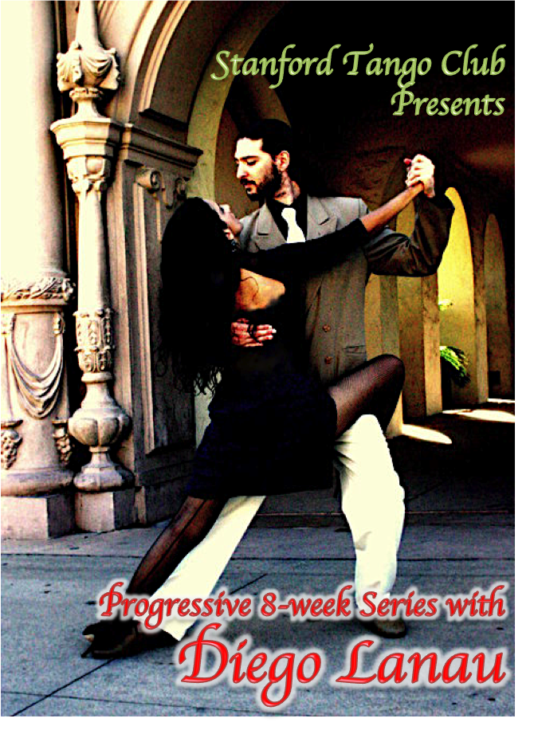

News
Spring Progressive Series
Stanford Tango Club presents an 8-week progressive series with Diego Lanau.
By popular demand, Diego Lanau returns to Stanford for a proper 8 week series. We received very positive feedback from all of you about Diego's miniseries, and we wanted to make sure to bring him back for a full series before he returns to Buenos Aires. Details below! The beginner series is appropriate for completely new dancers, those who have danced before but never tried Argentine Tango, and for those who want to improve their technique. Basically everyone! The intermediate series (first) is appropriate for those that have had some instruction in Argentine Tango before, and are familiar with the basic movements: parallel vs. crossed system, ochos, the cross, and simple turns. Many students take both the intermediate and beginner series.
Schedule and Topics: (Note intermediate series is first!)
07:45-08:45 PM Intermediate Topics:
Refinement and Creativity -
Structure and common problems in the embrace
Change of dynamics and front
Sacadas, barridas, boleos, and ganchos (oh my!)
Musicality/rhythm
Linking figures to create your own!
09:00-10:00 PM Beginner+ Topics:
All the tools you need to dance tango comfortably and creatively -
The embrace
Forward and backward ochos
Ocho cortado
Turns
Sandwich
Paradas and pasadas
We will also work on musicality and change of dynamic throughout.
10:00-LATE Stanford Practilonga
FREE open dancing, and an opportunity to work on what we've learned in class!
Location:
Friedrich Dining Hall, Koret Pavilion
565 Mayfield Avenue
Stanford, CA
If you use a GPS, be sure to remember to put "Stanford" as the name of the city! For a map visit http://tinyurl.com/KoretParking.
Parking: be sure to double-check the signs in your parking area. Most areas are open after 6:00 PM, but do not park in spots designated 24-7. We put marked parking lots on the map. We highly suggest the underground lot to the right. It's just a five minute walk.
Pricing:
We are happy to be able to offer bigger discounts again since this is a longer series!
1 Class (drop-in):
$5 Stanford ID holders
$15 General
Both Classes (drop-in):
$10 Stanford ID holders
$25 General
Full 8 week series:
$30 Stanford ID holders
$90 General
Full series, both classes:
$50 Stanford ID holders
$150 General
Spring Workshop
Stanford Tango Club presents a workshop weekend with Cristina and Homer Ladas.Saturday, 3/31/2012
10:45-11AM Registration
11-12:15PM Introducing the Elastic Embrace (all-levels)
1:30-2:45PM Alterations (beginning/intermediate)
3:00-4:15PM Leader's Back Sacadas (intermediate)
9PM-12AM Milonga (location TBA)
Sunday, 4/1/2012
1:15-1:30PM Registration
1:30-2:45PM Leader's Forward Sacadas (intermediate/advanced)
3:00-4:15PM Complex Rhythmic Weight Changes (advanced)
7PM-9PM Music Jam (location TBA)
Members of the general public:
$20/Class
$10/Milonga
$55 All Saturday events
$40 All Sunday events
$85 All events
Stanford students, staff and spouses (current Stanford ID required):
$10/Class
$0 Milonga
$20 All Saturday events
$15 All Sunday events
$35 All events
All workshop classes will be held at the Black Community Services Center Center at Stanford University.
418 Santa Teresa Street
Stanford, CA 94305-4009
If you use a GPS, be sure to remember to put "Stanford" as the name of the city!
Winter 2012 Classes - 6 Weeks of Tango
This Winter Stanford Tango Club will offer 6 WEEKS OF TANGO lessons at both beginner and intermediate levels.Thursdays 1/19 – 2/23
7:45 - 8:45PM Intermediate Class (int/adv)
9:00 - 10:00PM Beginner Class (beg/int)
The beginner class will be composed of the following :
1) Listening for rhythm & phrase in tango music
2) Biomechanics of leading and following fundamental tango dance movements
3) The process of creating simple and musical dance sequences
Koret Pavilion @ Ziff Center at Stanford University
565 Mayfield Avenue
(at the corner of Campus Drive & Mayfield Ave)
Stanford, CA
If you use a GPS, be sure to remember to put "Stanford" as the name of the city!
Map
Autumn 2011 Classes - 10 Weeks of Tango Part 2
This fall Stanford Tango Club will offer 10 WEEKS OF TANGO lessons as two separate series. Our second 5-week series will be on Wednesdays, starting November 9th with Felpe Martinez and Jean Chao!Wednesdays 11/9 – 12/14, except 11/23 (Thanksgiving week)
8:00 - 9:00
9:30 - 10:30
$15/class drop-in
$25/both classes drop-in on one night
$5/class drop-in for Stanford affiliates with current ID
Black Community Services Center
418 Santa Teresa St
Stanford, CA 94305
Korey & Adeline Big Game Workshop Weekend Nov 19-20
Stanford Tango Club enthusiastically presents Korey & Adeline Ireland on November 19 & 20.
Sat Nov 19 @ BCSC
11:00 - 11:30 Registration and warm up
11:30 - 12:45 Workshop 1 All levels - Floor & Embrace
2:00 - 3:15 Workshop 2 All levels - Music Essentials
3:45 - 5:00 Workshop 3 Int - Playing with the Free Leg
Sat Night @ EPC
8:30 - 12:30 Milonga with DJ Adeline and Music Performance by Korey
Sun Nov 6 @ BCSC
12:45 - 01:00 Registration and warm up
1:00 - 02:15 Workshop 4 Int/Adv - Pimped-out Ochos
2:45 - 04:00 Workshop 5 Int/Adv - Fresh Ideas to Renew Your Dance
Sun Evening @ EV Village Center
6:00 - 08:00
Workshop classes and practica at the Black Community Services Center (BCSC) at Stanford:
418 Santa Teresa St
Stanford, CA 94305
Saturday night milonga at Elliot Program Center (EPC) at Stanford:
589 Governor's Avenue
Stanford, CA 94305
Here's a map with parking areas for the workshops and milonga: http://g.co/maps/98byx
Music Jam and Practica at Escondido Village (EV) Village Center at Stanford:
845 Escondido Rd
Stanford, CA 94305
at the intersection of Escondido Road and Comstock Circle (look for the pre-school playground)
Here's a map with parking areas for the music jam: http://tinyurl.com/evdance.
Be sure to set your GPS city to Stanford. Most parking spots close to the BCSC are safe to park in, but be sure to check signs to be sure.
Murat & Michelle Workshop Weekend Nov 5-6
Stanford Tango Club had a great weekend with Murat & Michelle! Here's a group photo from the weekend.Sat Nov 5 @ BCSC
11:00 - 11:30
11:30 - 12:45
02:00 - 03:15
03:45 - 05:00
Sat Night @ EPC
08:00 - 12:30
Sun Nov 6 @ BCSC
12:45 - 01:00
01:00 - 02:15
02:45 - 04:00
04:30 - 06:00
Autumn 2011 Classes - 10 Weeks of Tango
This fall Stanford Tango Club will offer 10 WEEKS OF TANGO lessons as two separate series. Our first series will be Tango Thursdays, starting October 6th with Gary Weinberg and Jean Chao!Thursdays 10/6 – 11/3
7:30 - 8:30
9:00 - 10:00
10:00 - midnight
(Note: class on 11/3 will be with Felipe Martinez & Jean Chao)
Summer 2011 Mini-Workshops with Felipe Martinez
Starting Thursday, July 14, Felipe Martinez will teach special mini-workshops at Stanford!Last workshop is on Thursday, September 15
7:30 - 8:30
9:00 - 10:00
10:00 - Late
Koret Pavilion at the Ziff Center for Jewish Life
565 Mayfield Avenue
Stanford, CA 94305
(at the corner of Campus Dr & Mayfield)
If you use a GPS, be sure to remember to put "Stanford" as the name of the city! Here's a map: http://tinyurl.com/KoretParking
Summer 2011 Weekend with Sharna Fabiano & Aja Fenn
See them dance at the recent Fishnet Fete in DC!
Location: Havana Room in the Graduate Community Center at Stanford
11:00am-11:30 Registration and Warm-up
11:30am-1:00 Technique for Grace & Power (all levels)
2:00pm-3:30 Classic Elements for Close Embrace (all levels)
4:00pm-5:30 Complex Turns for Close Embrace (int)
9:00pm-late in the Escondido Village Village Center
Location: Havana Room in the Graduate Community Center at Stanford
12:45pm-1:00 Registration
1:00pm-2:00 Yoga-inspired Tango Warm-Up
2:00pm-3:30 Unexpected Paradas (int/adv)
4:00pm-5:30 The Boleo Laboratory (int/adv)
*Location change: Practica will be held in the EV Village Center (milonga room)* 7:00pm-8:30 Free Open Practica
Saturday & Sunday workshops are in the Havana Room, Graduate Community Center, Stanford University. Saturday night milonga & Sunday practica are in the Escondido Village Village Center, Stanford University. Most of the parking in the immediate area of the facilities is residential permit only. You can park for free in nearby lots on the other side of Campus Drive. Please read all parking signs carefully and see the map.
Map: http://tinyurl.com/StanfordEVDance
Facebook event: Sharna Fabiano & Aja Fenn Workshop Weekend
Spring 2011 Series
We're excited to have David and Mariana at Stanford (for the first time ever) to teach our Spring quarter Argentine tango classes on "Tango Thursdays" starting April 7th!Six week series on Thursday nights April 7 to May 26 (no class April 21 and May 12):
7:00 - 8:00
8:00 - 8:30
8:30 - 9:30
9:30 - Late
The intermediate class will be FIRST and the fundamentals class will be SECOND. No classes on April 21 and May 12. Everyone is welcome to stay for the Stanford Practicalonga immediately following the fundamentals class (free).
Koret Pavilion, Stanford University
565 Mayfield Avenue
Stanford, CA
Come early for your first class to find parking. Check out our map here for parking lots. We would recommend parking in the big lot at Lagunita Dr and Mayfield Ave (on the map, zoom out a little bit, up and to the left). It will be a five minute walk from there.
Winter 2011 Workshop #2
It's a Homer and Cristina Weekend at Stanford Part 2! The workshop theme is "The Colgada/Volcada Experience: Foundation to the Limits!".11:30 AM - 1:00 PM
1:00 PM - 2:00 PM
2:00 PM - 3:30 PM
4:00 PM - 5:30 PM
9:30 PM - 1:00 AM
2:00 - 3:30
4:00 - 6:00
8:00 - 10:00
The Saturday workshop will be at the Havana Room in the Graduate Community Center (co-located with Ray's Pub) on the Stanford campus, located at:
Graduate Community Center
750 Escondido Road
Stanford, CA
The Saturday night milonga will be in the majestic Toyon Hall Lounge, with a demo by H&C about 10:45 PM! More details soon.
The Sunday workshop will be at our regular Thursday night spot - Koret Pavilion on the Stanford campus:
Koret Pavilion
565 Mayfield Avenue
Stanford, CA
Also, sign up on our mailing list or check out our facebook event for this class series for latest information on scheduling and prices.
Winter 2011 Series
Eight week series with Korey and Adeline at Stanford on Tuesday nights* starting January 18.Bios on their Personal Webpage.
* Classes will be on Tuesdays except for a few weeks. See below for further details.
7:00 - 8:00 PM
8:00 - 8:30 PM
8:30 - 9:30 PM
Classes will be on Tuesdays except for the following weeks (same times, i.e. 7:00-9:30 PM):
Mon Feb 14 @ BCSC
Thu Feb 24 @ Koret Pavilion (our regular Thursday night spot)
Black Community Services Center
418 Santa Teresa St
Stanford, CA 94305
For a map, go here. Most parking spaces are safe to park in after 6:00 PM. Check the signs in each parking area to be sure.
Also, sign up on our mailing list or check out our facebook event for this class series for latest information on scheduling and prices.
Winter 2011 Workshop
It's a Homer and Cristina weekend at Stanford! The workshop theme is "The Leader's and Follower's Body Spiral".11:30 - 1:00 PM
Fundamentals of Body Spiral for Leaders and Followers
1:00 - 2:00 PM
2:00 - 3:30 PM
Get Your 'Pivot' vs No 'Pivot' Ochos Defined with Edgardo Donato
4:00 - 5:30 PM
Rebotes (switch steps) for Tango, Vals and Milonga with Juan D'Arienzo
5:30 - 9:30 PM
9:30 - 12:30 AM
2:00 - 3:30 PM
The Boleo vs Overturned Gancho Connection with Roberto Rufino
4:00 - 6:00 PM
The Body Spiral Explored with a CELLspace Inspired Music Mix
6:00 - 8:00 PM
8:00 - 10:00 PM
MUSICIANS: Come out for the Music Jam! Bring an instrument, Homer will get you jamming (free).
Save the date for Part 2 with Homer and Cristina Feb 19 - 20!
Autumn 2011 Workshop
Special pre-milonga workshops with Korey & Adeline on Nov 18 & Dec 2Bios on their Personal Webpage.
Location: Koret Pavilion
7:00 - 7:15 PM
7:15 - 8:30 PM
This class will focus on the how and why of tango movement and embrace to help dancers of all levels dance better individually and together.
8:45 - 10:00 PM
This class will build on the Foundations class, incorporating expressive ganchos into your dance. Some tango experience and attending the 1st hour’s class are recommended.
10:00 PM - LATE
7:45 - 8:00 PM
8:00 - 9:00 PM
This class will focus on the how and why of tango movement and embrace to help dancers of all levels dance better individually and together.
9:00 - 10:00 PM
This class will build on the Foundations class, incorporating expressive circular, curly, swirly movements into your dance. Some tango experience and attending the first hour’s class are recommended.
10:00 PM - LATE
Fall Stanford-Berkeley Milonga
Special Joint Milonga on Friday, Dec 10Stanford and Berkeley together at last! Come to our quarter-ending joint milonga co-hosted by Stanford and Berkeley tango clubs! Join our Facebook event here.
7:00 - 8:00
8:00 - 9:00
9:00 - 1:00
Black Community Services Center at Stanford University
418 Santa Teresa St
Stanford, CA
Map
Most parking spaces are safe to park in after 6:00 PM. Check the signs in each parking area to be sure.
Teachers:
DJ:
Fall 2010 Workshop
Special pre-milonga workshops with Korey & Adeline on Nov 18 & Dec 2Bios on their Personal Webpage.
Location: Koret Pavilion
7:00 - 7:15 PM
7:15 - 8:30 PM
This class will focus on the how and why of tango movement and embrace to help dancers of all levels dance better individually and together.
8:45 - 10:00 PM
This class will build on the Foundations class, incorporating expressive ganchos into your dance. Some tango experience and attending the 1st hour’s class are recommended.
10:00 PM - LATE
7:45 - 8:00 PM
8:00 - 9:00 PM
This class will focus on the how and why of tango movement and embrace to help dancers of all levels dance better individually and together.
9:00 - 10:00 PM
This class will build on the Foundations class, incorporating expressive circular, curly, swirly movements into your dance. Some tango experience and attending the first hour’s class are recommended.
10:00 PM - LATE
Fall 2010 Series
Eight week series with Santiago and Amy at Stanford on Tuesday nights starting September 28.7:00 - 8:00 PM
8:00 - 8:30 PM
8:30 - 9:30 PM
Black Community Services Center
418 Santa Teresa St
Stanford, CA 94305
For a map, go here. Most parking spaces are safe to park in after 6:00 PM. Check the signs in each parking area to be sure.
Spring 2010
Classes with Felipe Martinez and Jean Chao! This will be a 6-week session on Tuesdays starting May 11th! Classes will be held in the Black Community Center.7:00 - 8:00 PM Beginner Class
8:00 - 8:30 PM Practice / Break
8:30 - 9:30 PM Intermediate Class
For a map, go here. Most parking spaces are safe to park in after 6:00 PM. Check the signs in each parking area to be sure.
Winter 2010
Workshops with H+C on Saturday and Sunday afternoon, February 20th and 21st with a milonga at Stanford starting at 9:00 PM Saturday night and Musician's Jam Sunday at 6:00 PM.Saturday, February 20
================
Classes and practice with Homer and Cristina
12 - 1:15 PM Class "Dynamic Turns & Wraps in Close Embrace"
1:45 - 3:00 PM Class "Close Embrace Surprises"
3:30 - 4:45 PM Class "The Vanilla Bean Ocho & Baby Back Volcada"
MILONGA on the beautiful Stanford campus
9:00 PM - 1:00 AM Saturday night
Sunday February 21
===============
Classes with Homer and Cristina
12 - 1:15 PM Class "The Elegant Step-Over Colgada from Close to Open"
1:45 - 3:00 PM Class "The Leader's Back Sacada from Close to Open"
3:00 - 4:00 PM Practica
Musician's Jam (dancers and spectators welcome)
Starting at 6:00 PM
All events held at the Black Community Services Center Center at Stanford University:
418 Santa Teresa Street
Stanford, CA 94035-4009
For a map, go here. Most parking spaces are safe to park in after 6:00 PM. Check the signs in each parking area to be sure.